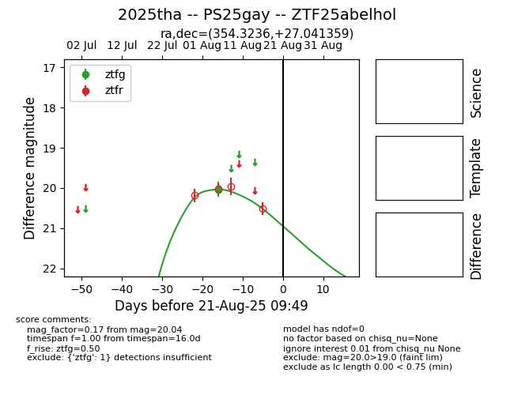

Target 2025tha at 2025-08-21 09:49, see:
FINK: fink-portal.org/ZTF25abelhol
Lasair: lasair-ztf.lsst.ac.uk/objects/ZTF25abelhol
ALeRCE: alerce.online/object/ZTF25abelhol
TNS: wis-tns.org/object/2025tha
YSE: ziggy.ucolick.org/yse/transient_detail/2025tha
alt names
ZTF25abelhol (ztf,alerce)
2025tha (tns,yse)
PS25gay (panstarrs)
coordinates:
equatorial (ra, dec) = (354.3236,+27.04136)
galactic (l, b) = (103.2064,-32.97457)
photometry
last ztfg=20.04
1 ztfg detections
